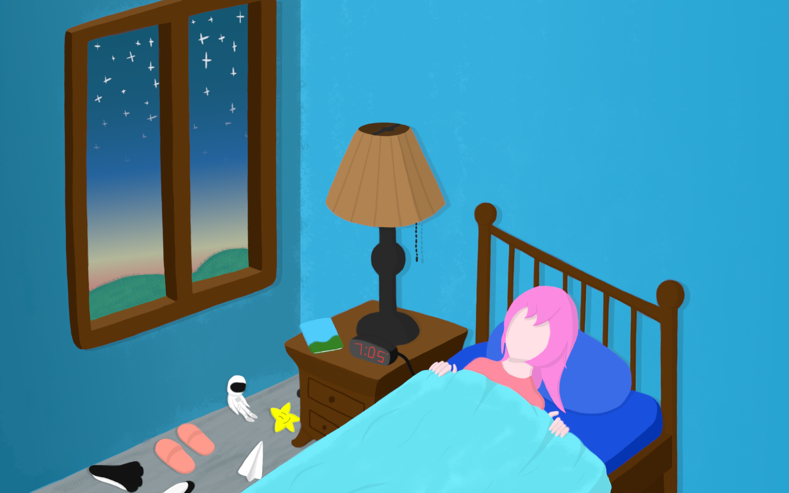

Starward Reach
Help a young girl reach for the stars in this 2D hand-drawn platformer roguelike!

1
Sep - Dec 2024
Solo Developer
Unity
Reach for the stars! In Starward Reach, you play as a young girl climbing the sky to reach the stars. As you ascend,
gather new movement abilities that will help you climb. But beware! If you're shocked by the growing storm clouds, you'll be sent
back too earth. Keep climbing and try to get as high a score as you can!
This game was made during the Fall 2024 Semester for my Intro to Game Development class at Bradley. Since I already had experience
with Unity going into this class, I decided to challenge myself for this project by making all the art by hand and
learning how to make procedurally generated levels.
Individual Contributions:
- Programmed full procedural level generation with system in place to ensure each level is completable.
- Created 65 hand-drawn sprites and backgrounds.
- Designed and coded a dynamic ability system to facilitate the rougelike game loop.
- Researched and implemented Unity controller support with rebindable controls.
- Utilized Trello to keep track of tasks keep myself accountable.